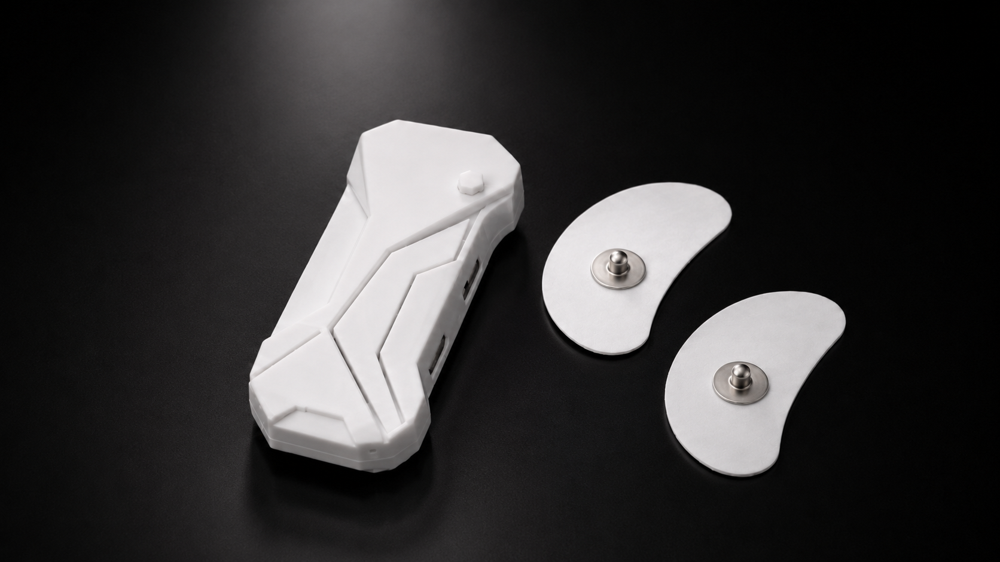
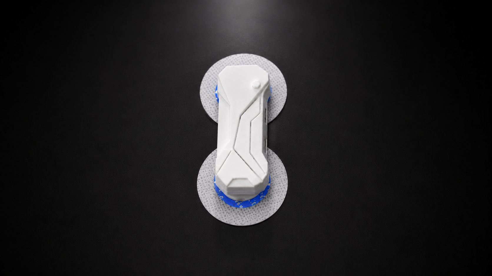
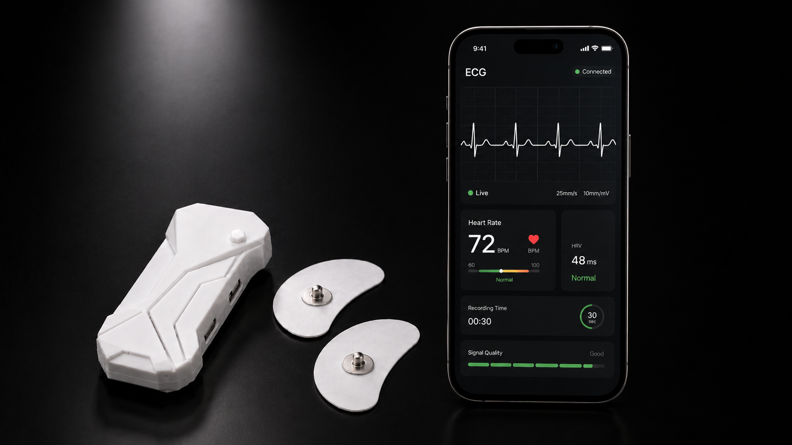

ECG wearable device
A handheld recorder that snaps onto two disposable electrodes, streams a live waveform to the paired app and reports heart rate, HRV and signal quality in real time.
A clean trace in untrained hands
The device had to produce a diagnostically useful trace when placed by someone with no training. Electrode spacing, snap geometry and the housing profile were all set by that single requirement — the body of the recorder is what positions the electrodes correctly.
Electrodes are standard disposables, so the recurring cost stays low and the recorder itself is a single sealed unit with one button and no display to break.

Live waveform on the phone
The companion app renders the trace at clinical scale — 25mm/s, 10mm/mV — alongside heart rate, HRV, recording time and a signal-quality bar that tells the user to reposition before the recording is wasted.

{{ s.text }}
What we delivered
{{ s.title }}
- {{ i }}
How it was built
{{ h.title }}
{{ h.desc }}
Need a cardiac device built?
Send the lead configuration, the recording duration and the market you are targeting. We will come back with a scope and a timeline.